Expression of type ExprTuple¶
from the theory of proveit.core_expr_types.tuples¶
In [1]:
import proveit
# Automation is not needed when building an expression:
proveit.defaults.automation = False # This will speed things up.
proveit.defaults.inline_pngs = False # Makes files smaller.
%load_expr # Load the stored expression as 'stored_expr'
# import Expression classes needed to build the expression
from proveit import ExprRange, ExprTuple, Variable, i, j, k
from proveit.numbers import Add, Exp, e, four, one, three, two
In [2]:
# build up the expression from sub-expressions
sub_expr1 = Variable("_a", latex_format = r"{_{-}a}")
expr = ExprTuple([ExprRange(sub_expr1, Exp(e, Add(sub_expr1, j)), i, k)], [Exp(e, Add(i, j)), Exp(e, Add(Add(i, one), j)), Exp(e, Add(Add(i, two), j)), Exp(e, Add(Add(i, three), j)), Exp(e, Add(Add(i, four), j))])
In [3]:
# check that the built expression is the same as the stored expression
assert expr == stored_expr
assert expr._style_id == stored_expr._style_id
print("Passed sanity check: expr matches stored_expr")
In [4]:
# Show the LaTeX representation of the expression for convenience if you need it.
print(stored_expr.latex())
In [5]:
stored_expr.style_options()
In [6]:
# display the expression information
stored_expr.expr_info()
| core type | sub-expressions | expression | |
|---|---|---|---|
| 0 | ExprTuple | 1, 2 | |
| 1 | ExprTuple | 3 | 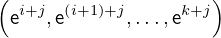 |
| 2 | ExprTuple | 4, 5, 6, 7, 8 | 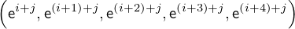 |
| 3 | ExprRange | lambda_map: 9 start_index: 47 end_index: 10 | 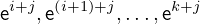 |
| 4 | Operation | operator: 23 operands: 11 | 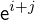 |
| 5 | Operation | operator: 23 operands: 12 | 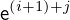 |
| 6 | Operation | operator: 23 operands: 13 | 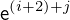 |
| 7 | Operation | operator: 23 operands: 14 | |
| 8 | Operation | operator: 23 operands: 15 | 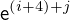 |
| 9 | Lambda | parameter: 42 body: 17 | 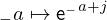 |
| 10 | Variable |  | |
| 11 | ExprTuple | 30, 18 | |
| 12 | ExprTuple | 30, 19 | |
| 13 | ExprTuple | 30, 20 | |
| 14 | ExprTuple | 30, 21 | |
| 15 | ExprTuple | 30, 22 | |
| 16 | ExprTuple | 42 |  |
| 17 | Operation | operator: 23 operands: 24 | 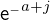 |
| 18 | Operation | operator: 40 operands: 25 | 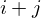 |
| 19 | Operation | operator: 40 operands: 26 | 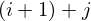 |
| 20 | Operation | operator: 40 operands: 27 | 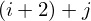 |
| 21 | Operation | operator: 40 operands: 28 | 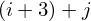 |
| 22 | Operation | operator: 40 operands: 29 | 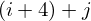 |
| 23 | Literal |  | |
| 24 | ExprTuple | 30, 31 | |
| 25 | ExprTuple | 47, 43 |  |
| 26 | ExprTuple | 32, 43 | 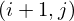 |
| 27 | ExprTuple | 33, 43 | 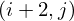 |
| 28 | ExprTuple | 34, 43 | 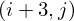 |
| 29 | ExprTuple | 35, 43 | 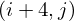 |
| 30 | Literal |  | |
| 31 | Operation | operator: 40 operands: 36 | 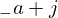 |
| 32 | Operation | operator: 40 operands: 37 | 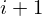 |
| 33 | Operation | operator: 40 operands: 38 |  |
| 34 | Operation | operator: 40 operands: 39 |  |
| 35 | Operation | operator: 40 operands: 41 |  |
| 36 | ExprTuple | 42, 43 | |
| 37 | ExprTuple | 47, 44 |  |
| 38 | ExprTuple | 47, 45 |  |
| 39 | ExprTuple | 47, 46 |  |
| 40 | Literal |  | |
| 41 | ExprTuple | 47, 48 |  |
| 42 | Variable |  | |
| 43 | Variable |  | |
| 44 | Literal |  | |
| 45 | Literal |  | |
| 46 | Literal |  | |
| 47 | Variable |  | |
| 48 | Literal |  |